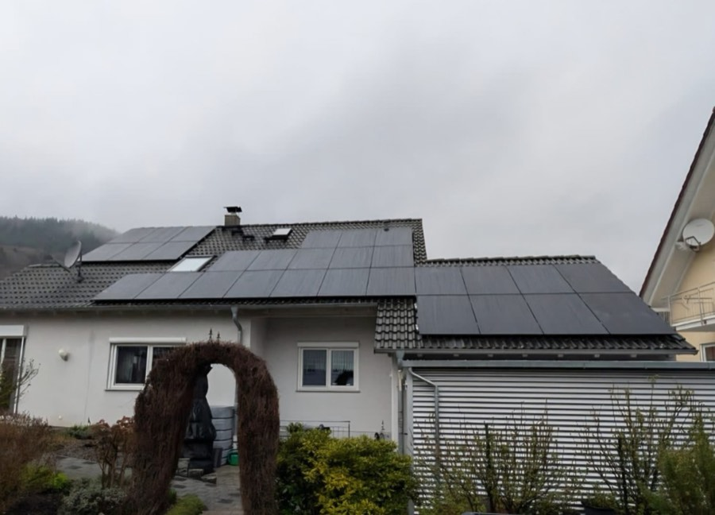

AC-gekoppelte Nachrüstung
Der Speicher bekommt einen eigenen Batteriewechselrichter und wird unabhängig von Ihrem bestehenden Wechselrichter angeschlossen. Passt zu fast jeder Bestandsanlage – egal wie alt.
Ihre Anlage produziert mittags mehr, als Sie verbrauchen – und abends kaufen Sie Netzstrom zu? Ein nachgerüsteter Batteriespeicher macht Ihren Solarstrom auch abends nutzbar. S&P Solar rüstet Stromspeicher nach in Baden-Baden, Rastatt, Bühl und Umgebung – schlüsselfertig inklusive Anmeldung.
Ohne Speicher nutzen die meisten Haushalte nur 25–35 % ihres Solarstroms selbst. Der Überschuss fließt für rund 8 ct/kWh (Richtwert, Stand Anfang 2026) ins Netz – und abends kaufen Sie Netzstrom für ein Vielfaches zurück. Genau diese Lücke schließt ein nachgerüsteter Solarspeicher: Er puffert den Mittagsüberschuss und gibt ihn abends wieder ab.
Besonders deutlich wird das bei Ü20-Anlagen: Läuft die EEG-Vergütung nach 20 Jahren aus, bringt die Einspeisung kaum noch etwas ein – der Eigenverbrauch über einen Speicher wird dann zur mit Abstand besten Option für Ihre Anlage.
*Richtwerte, abhängig von Anlagengröße, Speichergröße und Verbrauchsverhalten. In der Bestandsaufnahme rechnen wir Ihr persönliches Profil durch.
Ob Bestandsanlage ohne Speicher, zu klein geplanter Solarspeicher oder anstehender Wechselrichter-Tausch – Eduard Schartner findet die Variante, die technisch und wirtschaftlich zu Ihrer Anlage passt.
Der Speicher bekommt einen eigenen Batteriewechselrichter und wird unabhängig von Ihrem bestehenden Wechselrichter angeschlossen. Passt zu fast jeder Bestandsanlage – egal wie alt.

Ihr Wechselrichter ist in die Jahre gekommen? Dann lohnt oft der Umstieg auf einen Hybrid-Wechselrichter, der Anlage und Speicher gemeinsam steuert – effizient und aufgeräumt.

Viele moderne Speichersysteme sind modular erweiterbar – ein zusätzliches Batteriemodul statt Neukauf. Ob Ihres dazugehört, prüfen wir anhand von Hersteller und Modell.

Bevor wir ein Angebot schreiben, prüfen wir Ihre Bestandsanlage: Wechselrichter, Zählerschrank, Leitungswege und Stellplatz für den Speicher. Gern vorab per Foto über WhatsApp.

Montage durch unser Team – ordentliche Kabelwege, sauber gesetzter Speicher und eine Baustelle, die besenrein übergeben wird. Oft an einem einzigen Tag erledigt.

Ein nachgerüsteter Speicher muss gemeldet werden: Wir übernehmen die Meldung beim Netzbetreiber und die Aktualisierung Ihres Eintrags im Marktstammdatenregister.
Beim Batteriespeicher-Nachrüsten gibt es zwei Wege, den Speicher anzubinden. Welcher der richtige ist, hängt vor allem davon ab, ob Ihr bestehender Wechselrichter bleibt oder ohnehin getauscht wird:
| Kriterium | AC-Kopplung | DC-/Hybrid-Kopplung |
|---|---|---|
| Prinzip | Speicher mit eigenem Batteriewechselrichter, angebunden ans Hausnetz | Speicher hängt direkt am (neuen) Hybrid-Wechselrichter |
| Ideal, wenn … | Ihre Anlage läuft und der Wechselrichter bleibt | der Wechselrichter ohnehin getauscht wird |
| Bestehender Wechselrichter | bleibt unverändert – funktioniert mit fast jedem Fabrikat | wird durch einen Hybrid-Wechselrichter ersetzt |
| Effizienz | sehr gut – geringe Zusatzverluste durch doppelte Wandlung | etwas effizienter, da der Strom direkt gespeichert wird |
| Fazit fürs Nachrüsten | Erste Wahl bei den meisten Bestandsanlagen | Sinnvoll beim Wechselrichter-Tausch – rechnen wir gern durch |
Ehrliche Antwort: Es hängt von Speichergröße, System und Ihrem Zählerschrank ab. Damit Sie eine realistische Vorstellung bekommen, hier marktübliche Richtwerte für schlüsselfertige Nachrüstungen (Stand 2026) – Ihren verbindlichen Preis erhalten Sie nach dem Vor-Ort-Termin.
| Speichergröße | Passt typischerweise zu | Richtwert schlüsselfertig* |
|---|---|---|
| ca. 5 kWh | Haushalte bis ca. 4.000 kWh/Jahr | ca. 4.000–6.000 € |
| ca. 10 kWh | ca. 4.000–6.000 kWh/Jahr oder E-Auto geplant | ca. 6.500–9.500 € |
| ca. 15 kWh | große Haushalte mit E-Auto und hohem Verbrauch | ca. 9.000–13.000 € |
Keine Mehrwertsteuer: Der Nullsteuersatz (§ 12 Abs. 3 UStG, Stand 2026) gilt auch, wenn Sie einen Speicher zu einer bestehenden PV-Anlage auf einem Wohngebäude nachrüsten. Die Richtwerte oben sind daher Endpreise ohne zusätzliche MwSt.
*Richtwerte, abhängig von System, Speichergröße und Verbrauchsprofil. Einspeisevergütung: Stand Anfang 2026 für Anlagen bis 10 kWp mit Überschusseinspeisung. Steuerliche Detailfragen klären Sie bitte mit Ihrem Steuerberater.
Klar strukturiert und ohne Umwege – so läuft die Speicher-Nachrüstung mit S&P Solar ab:
Sie schreiben uns per E-Mail oder WhatsApp.
Wir prüfen Anlage, Wechselrichter und Zählerschrank – gern mit Fotos vorab per WhatsApp.
Sie erhalten ein Angebot mit passender Speichergröße und Anbindung.
Der Speicher wird installiert – oft an einem einzigen Tag.
Netzbetreiber-Meldung und Marktstammdatenregister übernehmen wir.
Ihr Solarstrom versorgt Sie jetzt auch abends und nachts.
Wir setzen auf hochwertige Marken, die langfristig überzeugen – bei Modulen, Wechselrichtern und Speichern.
S&P Solar sitzt in Baden-Baden und rüstet Stromspeicher in ganz Mittelbaden nach. Das heißt für Sie: kurze Wege für Bestandsaufnahme und Montage bei Ihnen in Baden-Baden, Rastatt oder Bühl – und ein Ansprechpartner, der Ihre Anlage danach kennt, statt einer anonymen Hotline. Einblicke in umgesetzte Anlagen finden Sie in unseren Projektbeispielen.


Schicken Sie Eduard Schartner einfach ein Foto Ihres Wechselrichters und Zählerschranks per WhatsApp – er sagt Ihnen ehrlich, welcher Speicher zu Ihrer Bestandsanlage passt und was die Nachrüstung kostet.
Artur Schartner, Inhaber von S&P Solar, hält Organisation und Abwicklung zusammen – so läuft Ihr Projekt vom Angebot bis zur Anmeldung reibungslos.
Als Richtwert (Stand 2026, schlüsselfertig inklusive Montage und Anmeldung): ein Speicher mit ca. 5 kWh liegt bei ca. 4.000–6.000 €, mit ca. 10 kWh bei ca. 6.500–9.500 €, mit ca. 15 kWh bei ca. 9.000–13.000 €. Der verbindliche Preis hängt von System, Zählerschrank und Leitungswegen ab und wird nach einem Vor-Ort-Termin festgelegt.
In den meisten Fällen ja: Ohne Speicher nutzen Haushalte typischerweise nur 25–35 % ihres Solarstroms selbst – der Überschuss wird für rund 8 ct/kWh (Richtwert, Stand Anfang 2026) eingespeist, während abends teurer Netzstrom zugekauft wird. Mit nachgerüstetem Speicher sind bis zu 80 % Eigenverbrauch möglich. Je größer der Abstand zwischen Strompreis und Einspeisevergütung, desto stärker lohnt sich der Speicher.
Fast immer: Bei der AC-Kopplung bekommt der Speicher einen eigenen Batteriewechselrichter und arbeitet unabhängig vom bestehenden Wechselrichter – das funktioniert mit nahezu jeder Bestandsanlage, unabhängig von Alter und Fabrikat. Ob stattdessen eine Hybrid-Lösung oder eine Batterieerweiterung sinnvoll ist, klären wir im Kompatibilitäts-Check.
Ihre EEG-Vergütung bleibt vom Nachrüsten unberührt – Sie speisen weiterhin den Überschuss ein, der nicht im Speicher landet. Bei Ü20-Anlagen, deren Vergütung nach 20 Jahren ausgelaufen ist, ist der Eigenverbrauch über einen Speicher meist ohnehin die beste Option.
Ja: Der Nullsteuersatz nach § 12 Abs. 3 UStG gilt auch für Speicher, die zu einer bestehenden PV-Anlage auf einem Wohngebäude nachgerüstet werden (Stand 2026). Sie zahlen also keine Mehrwertsteuer auf Speicher und Montage.
Die Montage eines nachgerüsteten Speichers dauert oft nur einen Tag – inklusive Anschluss und Inbetriebnahme. Dazu kommen die Anmeldung beim Netzbetreiber und die Aktualisierung im Marktstammdatenregister, die wir für Sie übernehmen. Den konkreten Zeitplan erhalten Sie mit dem Angebot.
Viele moderne Speichersysteme sind modular aufgebaut und lassen sich später um zusätzliche Batteriemodule erweitern. Ob das bei Ihrem Wunschsystem – oder Ihrem bereits vorhandenen Speicher – möglich ist, prüfen wir vor dem Angebot. So starten Sie kleiner und wachsen mit, etwa wenn ein E-Auto dazukommt.
Nur, wenn das System eine Notstrom- oder Ersatzstromfunktion mitbringt – das ist nicht bei jedem Speicher automatisch der Fall. Einige Systeme, die wir verbauen, bieten diese Funktion optional an. Sagen Sie uns in der Beratung, ob Ihnen Notstrom wichtig ist.
Schicken Sie uns gern vorab ein Foto Ihres Wechselrichters oder Zählerschranks per WhatsApp – das beschleunigt die Einschätzung deutlich. Eduard Schartner meldet sich persönlich zurück und sagt Ihnen ehrlich, welche Speichergröße und Anbindung zu Ihrer Anlage passen.
Noch keine PV-Anlage? Komplettanlagen mit Stromspeicher – schlüsselfertig geplant, montiert und angemeldet.
Mehr erfahren →E-Auto mit eigenem Solarstrom laden: Wallbox fachgerecht installiert und beim Netzbetreiber angemeldet.
Mehr erfahren →PV-Lösungen für Unternehmen: Flachdach, Hallendach oder Carport – mit starker Wirtschaftlichkeit.
Mehr erfahren →